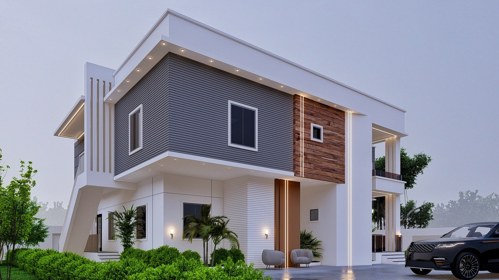
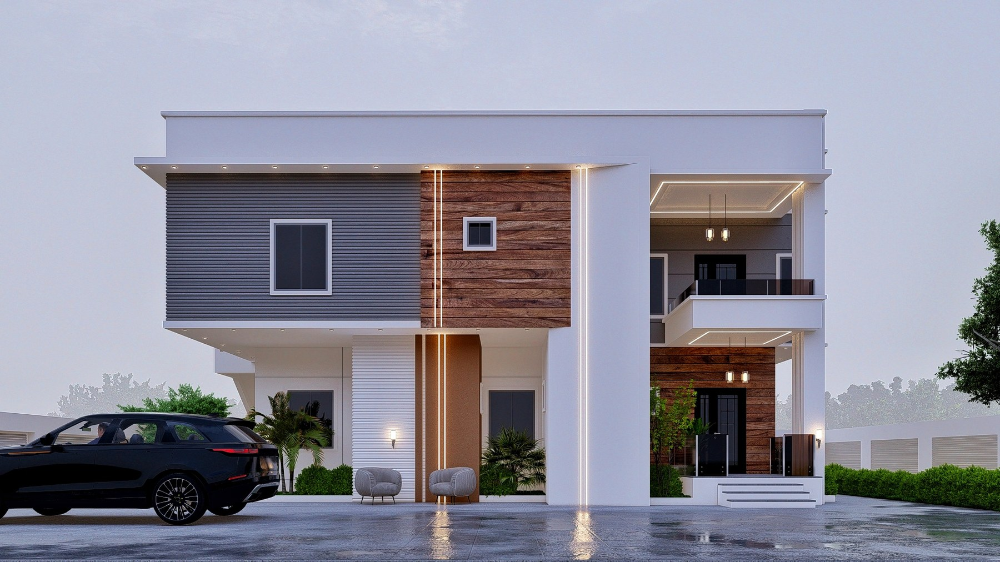
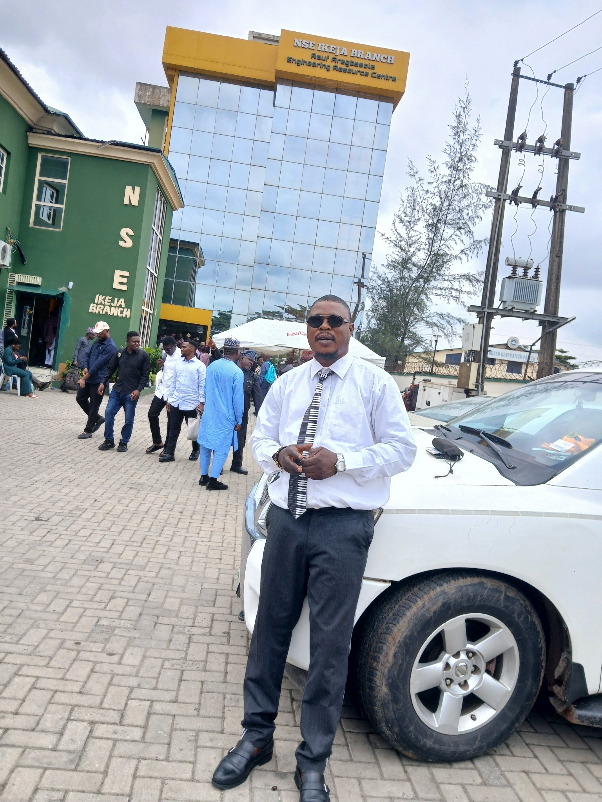
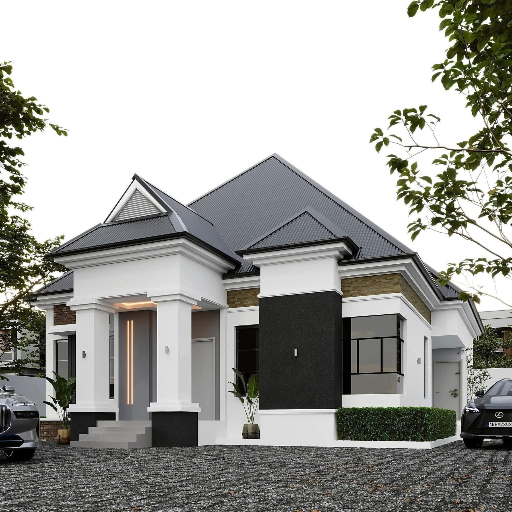
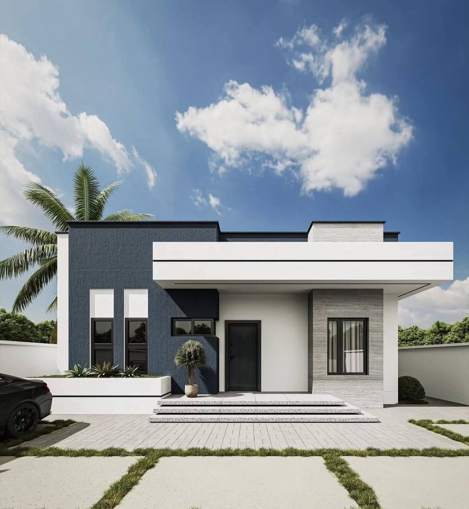
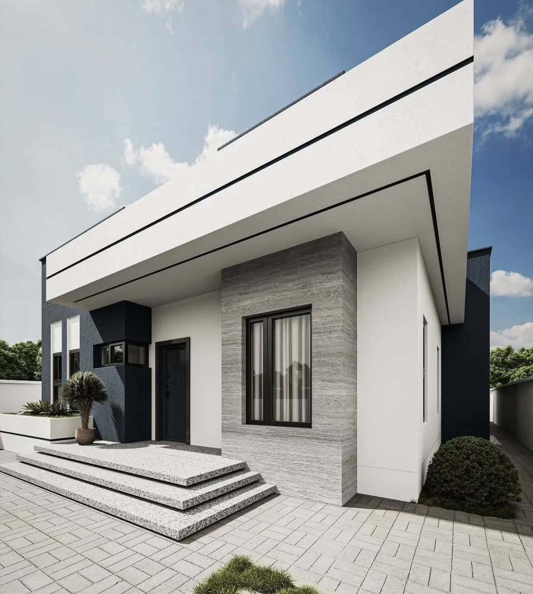

OYO STATE
Royal Garden Estate
Residential / estate development project record.
View project record →Project portfolio
Browse our residential, estate and institutional project records, alongside selected photos and design concepts.

OYO STATE
Residential / estate development project record.
View project record →OYO STATE
Residential building project record.
View project record →LAGOS STATE
Institutional building project record.
View project record →OYO STATE
Residential / development project record.
View project record →OYO STATE
Building development project record.
View project record →OYO STATE
Estate development project record.
View project record →OYO STATE
Hospitality / building project record.
View project record →OYO STATE
Residential client project record.
View project record →LATEST PUBLISHED WORK
Loading published projects…
ADMIN-UPDATED GALLERY
Loading gallery…
VISUAL GALLERY & INSPIRATION
A refreshed visual collection supplied for TW&D website presentation. The gallery is separate from the historical project records above and does not claim that any image depicts a specific project, client or location listed on this page.








The gallery brings together site photographs and architectural concepts. See the TW&D business listing for more photos shared on Google Maps.